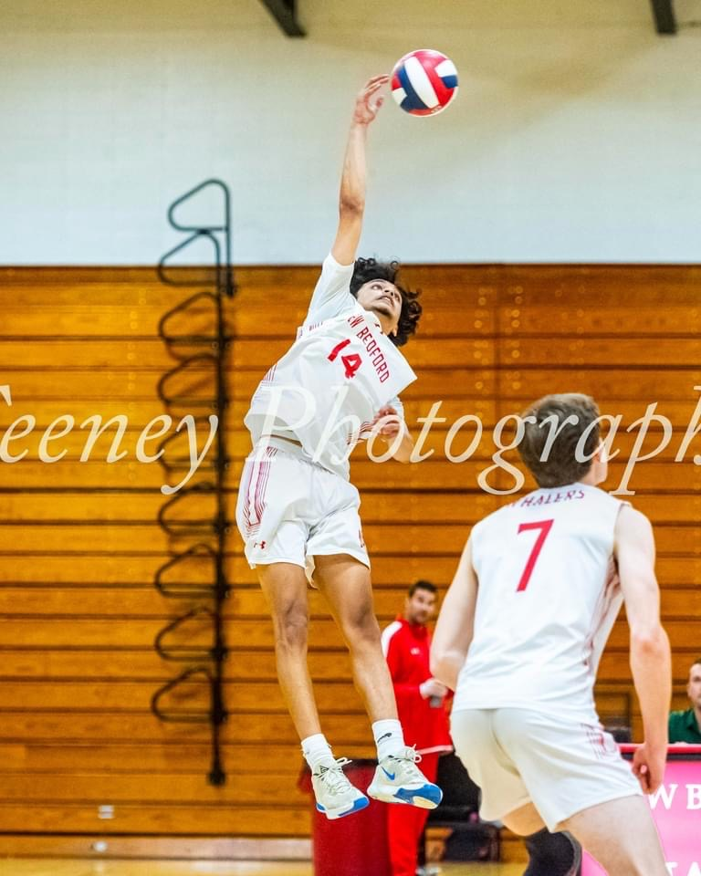
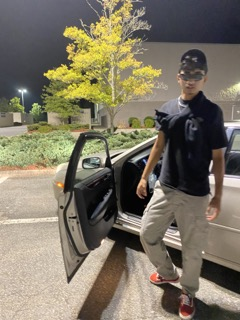
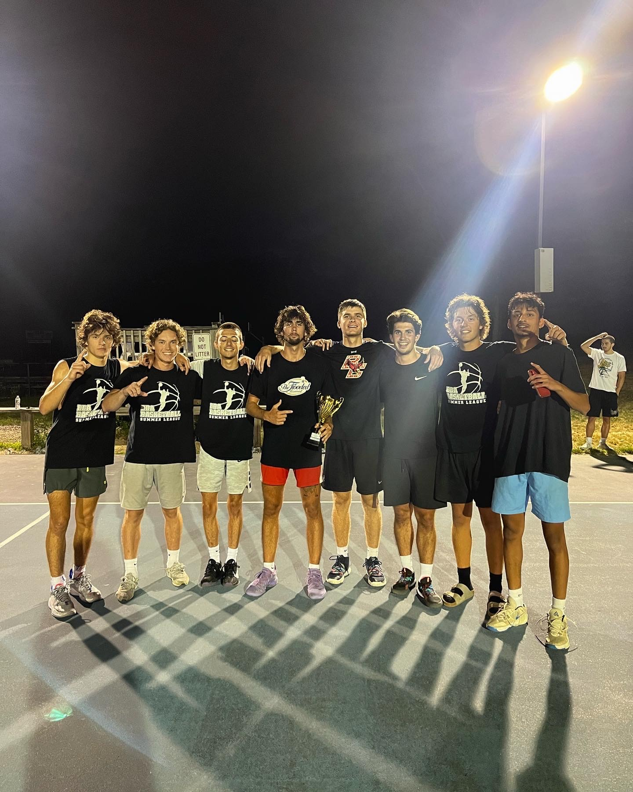

| |
|
|
|
Wassup, my name is Kishan Patel and I was born on November 14, 2003 in Milwaukee, Wisconsin but moved to New Bedford, Massachusetts when I was around five years old. Moving states and schools is obviously tough but I grew to like New Bedford. When I first started 1st grade I was an outsider but quickly made friends who would then stay by my side until today's time. New Bedford, along with my friends and family, shaped me into the person I am today and I am grateful for all the experiences and lessons I have been through that guides me to achieve my aspirations and goals.
  